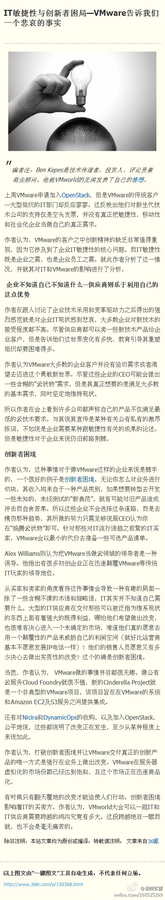

#OpenStack#中国行深圳站听到一种观点：你们这些草根型云计算社区看着热闹，很赚眼球，但学术界并不稀罕，也不屑于和你们一起在这个圈里玩，国家有云计算投资的话，会交给国有科研院所，不会给你们。[呵呵]@流蝶紫墨:#IT敏捷性与创新者困局—VMware告诉我们一个悲哀的事实# 编者注：Ben Kepes是技术传道者，投资人、评论员兼商业顾问。他就VMworld的见闻发表了自己的感想。 上周VMware申请加入OpenStack，但是VMware的传统客户—大型组织的IT部门却反应寥寥。这反映出他们对新生代技术公司的... 网页链接 